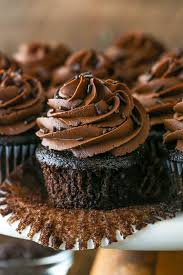

Chocolate Cupcake Recipe

Chocolate cupcakes are the ultimate party food. These are super moist and bursting with rich, chocolaty flavor —
and they're so easy to make. Frost these delicious chocolate cupcakes with buttercream or cream cheese frosting,
or try royal icing or even whipped cream.
Skip the boxed chocolate cupcake mix — homemade chocolate cupcakes are just as easy to make (and even more delicious). In just 30 minutes,
you'll have rich and moist chocolate cupcakes ready to serve for your next holiday, party, or potluck. Be prepared to have everyone asking you
for this decadent chocolate cupcake recipe!
Ingredients
- 3/4 cup unsweeted cocoa powder
- 1 and 1/3 cups all-purpse flour
- 1 and 1/2 cup sugar
- 3 tablespoons butter, softened
- 2/3 teaspoon vanilla extract
- 2 large eggs
- 1 cup milk
- 2 teaspoons baking powder
- 1/4 teaspoon baking soda
- A pinch of salt
Steps
- Preheat the oven to 175 degrees C (350 degrees F). Line a muffin pan with paper or foil liners.
- Sift together flour, cocoa, baking powder, baking soda and salt.
- Cream together sugar and butter in a large bowl until light and fluffy.
- Add egg, one at ta time, beating well after each addition. Stir in the vanilla. Add flour mixture in two batches,
alternating with milk; beat well.
- Spoon batter into the prepared muffin cups, filling each 3/4 full.
- Bake in the preheated oven until a toothpick inserted into the centrees comes out clean, 15 to 17 minutes. Remove
from the oven and let cool before serving or frosting.